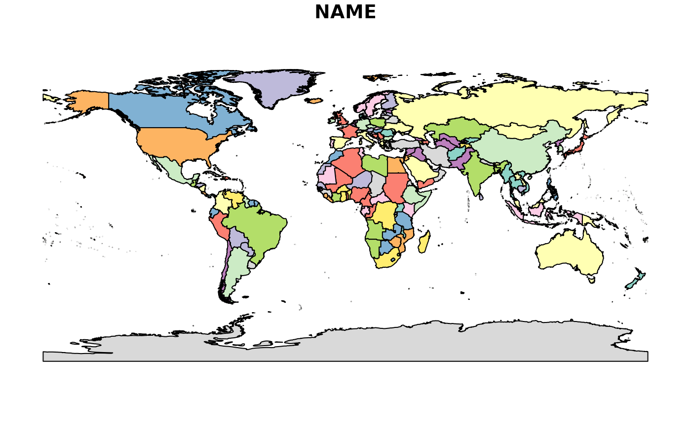

This dataset provides boundaries of all countries in the world, in decimal degrees. Available variables are:
"FIPS" FIPS 10-4 Country Code.
"ISO2" ISO 3166-1 Alpha-2 Country Code.
"ISO3" ISO 3166-1 Alpha-3 Country Code.
"UN" ISO 3166-1 Numeric-3 Country Code.
"NAME" Name of country/area.
"AREA" Land area, FAO Statistics (2002).
"POP2005" Population, World Population Prospects (2005).
"REGION" Macro geographical (continental region), UN Statistics.
"SUBREGION" Geographical sub-region, UN Statistics.
"LON" Longitude.
"LAT" Latitude.
Format
Object of class sp::SpatialPolygonsDataFrame.
Source
Provided by Bjorn Sandvik on The dataset was derived by Schuyler Erle from public domain sources. Sean Gilles did some clean up and made some enhancements. The dataset is available under a Creative Commons Attribution-Share Alike License (https://creativecommons.org/licenses/by-sa/3.0/).
Note
The boundaries, names designations used do not imply official endorsement or acceptance by the authors. Use this dataset with care, as several of the borders are disputed.
Examples
plot(TMWorldBorders["NAME"])
